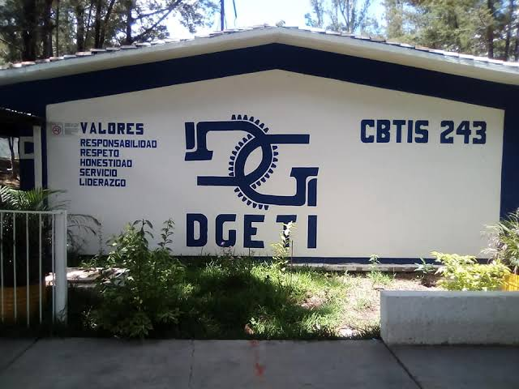
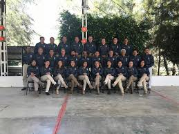
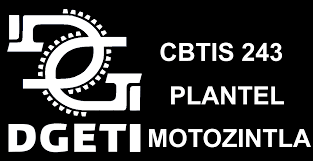

ormar personas con conosimientos tecnologicos en las areas industrial, comercial y de servisio, a traves de la preparacion de bachilleres y profesionales tecnicos, con el fin de contribuir al desarrollo sust entable del pais.
ser una institucion de educasion mnedia superior, sertificada, orientada al aprendisaje y desarrollo de conosimientos tecnologicos y humanisticos.
El Colegio CBTIS 243 es uno de los colegios de la zona que es buscado por mucha gente. Es fundamental tener en cuenta este punto de vista, porque depende de dónde esté ubicado tendrán que tomar transportepúblico o no.

El Colegio Esta dado de alta bajo la razón social: SECRETARIA DE EDUCACION PUBLICA . La razón social es el nombre o denominación oficial de una empresa, es decir, es el modo de nombrar a la persona moral o persona jurídica, y que permite identificarla de manera inequívoca.

Este nombre se emplea para usos formales, jurídicos y administrativos y no tiene por qué ser igual con el nombre comercial de la misma o con las marcas que comercializa.

El Colegio Pertenece al sector Público La principal diferencia entre colegio público y colegio privado,esta en que al colegio pública la sostiene económicamente el gobierno, mientras que a la escuela privada son los propios alumnos, a través de sus padres o tutores, quienes la solventan pagando una cuota mensual, y eventualmente una matrícula que se paga a comienzo de cada ciclo escolar.
calle central poniente s/n barrio san francisco c.p 30900 (telefono y fax 9626410262)
e-mail institucional: cbtis24.dir@uemstis.sems.gob.mx